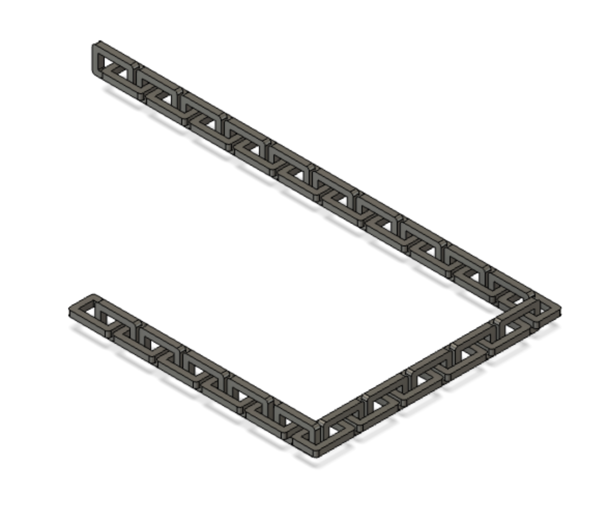
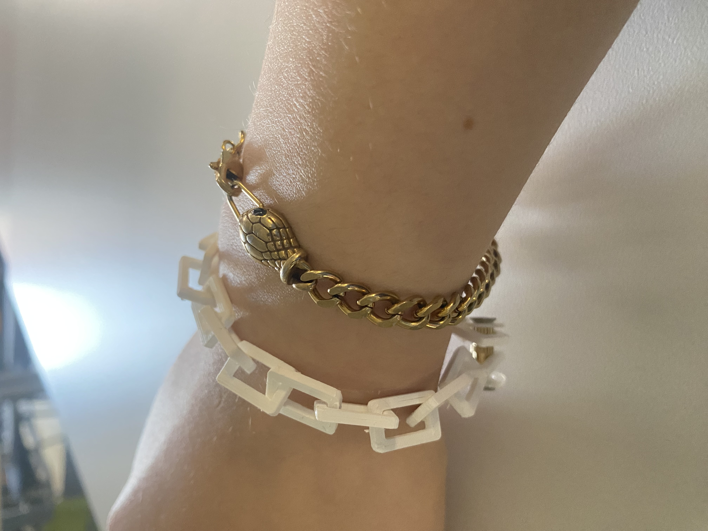

### 3D Printing
## Concept & Inspirations
I recently started making jewelry again, which is something I used to do a lot in middle school. I made myself a chain necklace and earrings. I also recently discovered that I am allergic to brass, so I had to stop wearing the jewelry I made. For this project, I decided to design a 3D printed chain patter that I could use for nacklaces, earrings or bracelets. My inspiration for this idea also came from a piece of jewelry I already own, a pair of 3D printed chain earrings. I really like how lightweight these earrings are, as well as how easy they are to customize.
## Design Process
I designed my chain in Fusion 360. Initially, I designed a much smaller chain but that ended up breaking too easily when actually printed. I ended up prefering this larger, boxier design, as I generally tend twoards chunky jewelry.

I used PruisaSlicer to slice my design, and uploaded the gcode to the Pruisa 3D Printer. After printing, I had to get rid of all of the supports by hand and used a nut and bolt configuration to make my chain a usable bracelet. Here's the final product, as well as the files I used along the way:

<a download href='./chain.f3d'>Download my Fusion file <\a>
<a download href='./chain.stl'>Download my STL file <\a>
<a download href='./path_to_file.stl'>Download my gcode file <\a>